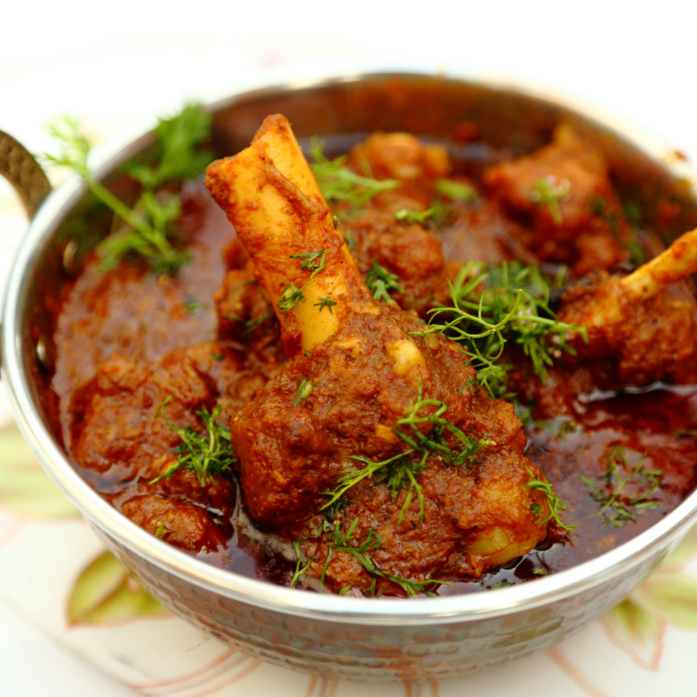

Dine well and you’ll be able to think well, sleep well, and live well.
For some reason, food tastes better when it’s somebody‘s treat !!!!!!, Ohh yeahhsss
Paneer Butter Masala
Description Paneer butter masala, also known as butter paneer is a rich & creamy
curry made with paneer, spices, onions, tomatoes, cashews and butter. As the name denotes, the curry is cooked in butter which imparts it's characteristic buttery flavor to the dish.
Method
Step 1: Heat three tablespoons butter with one teaspoon oil in a kadai. Add bay leaves, cloves, cinnamon, red chillies and half of the crushed coriander seeds. Sauté for half a minute.
Step 2: Add onion and stir-fry for thirty seconds and add ginger paste and garlic paste. Cook for another thirty seconds. Add coriander powder, red chilli powder and tomatoes. Cook on high heat till oil leaves the masala. Puree the mixture.
Step 3: Heat the remaining butter in a non-stick, cook the pureed mixture for two minutes. Add paneer pieces and salt. Add ½ cup of water. Cook covered on low heat for five minutes.
Step 4: Sprinkle kasoori methi and mix in lightly. Remove from heat and mix in cream. Serve hot, garnished with coriander sprig.
Aloo Parata
DescriptionAloo naan is a traditional Indian flatbread and a version of naan.
It's made with a combination of flour, yeast, salt, sugar, and yogurt. The naan is stuffed with a spicy combination of mashed potatoes, chili peppers, coriander, and garam masala, if desired.
Method
Step 1: Sift flour with half a teaspoon of salt. Mix with three-fourth cup of water gradually and knead to make a smooth dough. Cover with a damp cloth and keep aside for fifteen minutes.
Step 2: Grate the potatoes. Grind pomegranate seeds to a coarse powder. Mix potatoes, pomegranate seeds, red chilli powder, green chilli and salt. Divide it into four equal portions Divide dough into eight equal portions and make pedas.
Step 3: Cover with a wet cloth and keep aside for five minutes. Take a peda and flatten it by pressing. Place potato mixture on it and again make it into a peda.
Step 4: Seal the edges completely so that potato stuffing does not come out. Flatten these pedas, sprinkle a little flour and roll them with a rolling pin to approximately six-inch diameter. This is now called a parantha.
Step 5: Heat a tawa, place parantha on it and cook on moderate heat for three minutes. Turn it and pour half a tablespoon of oil or butter, spread it on parantha and shallow fry over low heat.
Step 6: Turn it and again pour half a tablespoon of oil or butter on other side. Cook on low heat till golden brown. Serve hot with fresh yogurt or mango pickle.
Daal Chawal
Description
Daal chawal is a Pakistani dish that is also quite popular in Nepal and India.
It consists of lentils and rice, and it is recommended to use both red lentils
(masoor) and yellow lentils (moong). The lentils are cooked until mushy, typically flavored with cumin and coriander for extra flavor.
Method
Step 1: Heat 1 tablespoon oil in a non-stick pan. Add cumin seeds and sauté till seeds change colour
Step 2: Add ginger, garlic and green chilli, mix and sauté for a minute. Add asafoetida, curry leaves and turmeric powder and mix well. Add pigeon peas and salt and mix well.
Step 3: Add coriander leaves, mix and cook till the mixture dries. Transfer into a bowl, add rice and mix well.
Step 4: Grease your palms with some oil. Divide the mixture into equal portions, stuff each with a cheese cube and shape into balls.
Step 5: Dip the balls in slurry and coat with breadcrumbs. Repeat the process.Heat sufficient oil in a kadai. Deep-fry arancini till golden brown. Drain on absorbent paper
Hyderabadi Veg Biryani
DescriptionHyderabadi Biryani is characteristically distinct.
The aroma, taste, tender meat, the Zaffran, everything gives it a distinguished appearance.
Those who have tasted Lucknow Biryani may find Hyderabadi a bit familiar. Both biryanis belonged to the Mughal regime, yet down south the food is laced with local spices
Method
Step 1: Heat sufficient oil in a kadai and deep-fry sliced onions till golden brown. Drain on an absorbent paper.
Step 2: Beat yogurt. Add two tablespoons of biryani Masala, half of the fried onions, ginger paste and garlic paste, salt and vegetables. Allow to marinate for thirty minutes.
Step 3: Add four- five cups of water to a deep non-stick pan along with green cardamoms, cloves, bay leaves, black peppercorns and salt. Bring to a boil, add rice and cook till the rice is three fourth done. Drain and spread on a plate.
Step 4: Dissolve saffron in warm milk. Heat ghee in a thick-bottomed vessel, add the marinated vegetables and sauté for two to three minutes.
Step 5: Add three-fourth cup of water and bring to a boil, then simmer for two to three minutes. Layer rice evenly over vegetables.
Step 6: Sprinkle the remaining biryani masala, mint leaves, coriander leaves. Reserve some fried onions and sprinkle the remaining on top. Sprinkle cashew nuts, almonds and raisins.
Chiken Biryani
DescriptionBiryani is a spiced mix of meat and rice, traditionally cooked over an open fire in a leather pot.
It is combined in different ways with a variety of components to create a number of highly tasty and unique flavor combinations
Method
Step 1: Cut chicken in one inch pieces. Boil rice and set aside. Heat oil in a non-stick pan, add cinnamon, bay leaves, cloves, cumin seeds, green cardamoms and sauté for half a minute.
Step 2:Add sliced onions and sauté. Add slit green chillies and chicken cubes and continue to sauté. Add turmeric powder and mix. Add tomatoes and salt and mix. Add ginger-garlic paste, red chilli powder and yogurt. Mix well.
Step 3: Add half the fried brown onions. Add the boiled rice on top. Sprinkle garam masala powder, ginger strips, mint leaves and coriander leaves. Sprinkle milk, rose water and remaining browned onions.
Step 4: Cover and cook on low heat for about ten minutes. Garnish with the egg slices and serve hot.
Chiken Ghee roast
DescriptionThe ghee roast originated in a small town called Kundapur near Mangalore.
The ghee flavored fiery red, tangy and spicy dish soon became very popular and is available in restaurants across Karnataka.
Method
Step 1:Combine chicken pieces with turmeric powder, red chilli powder, black pepper powder, garam masala powder, ginger-garlic paste, soy sauce and salt. Mix well and set aside to marinate for half an hour.
Step 2:Heat one teaspoon oil in a non-stick pan. Add marinated chicken pieces and cook till soft, using a little water. Add tomato ketchup, mix well and remove from heat. Set aside. Heat four tablespoons oil in a non-stick kadai. Add ginger and garlic. Mix well and saute till golden.Add onion and green chillies. Mix well and cook till onion is soft. Add capsicum and mix well. Saute for three minutes. Add the cooked chicken, MSG and adjust salt. Mix well and cook on low for ten minutes or until dry.
Step 3:Serve hot with fried rice, noodles or naan.
Mutton fry

DescriptionMutton fry dish prepared with goat meat, originating from the Indian subcontinent and Southeast Asia.
The dish is a staple in Southeast Asian cuisine, Caribbean cuisine, and cuisine of the Indian subcontinent.
Method
Step 1: Heat 1½ cups water in a deep non-stick pan, add mutton pieces, turmeric powder and ginger-garlic paste and mix. Add salt, mix, cover and cook till mutton is done. Drain in a bowl and reserve the stock.
Step 2:To prepare the paste, heat oil in a non-stick pan, add 12-16 curry leaves, let them crackle and then drain into a bowl.
Step 3:Add caraway seeds, peppercorns, star anise, green cardamoms, black cardamom, cinnamon, cloves, coriander seeds, remaining curry leaves, ginger and garlic and sauté till fragrant. Add onion and coconut and sauté till coconut turns golden brown. Add turmeric powder and chilli powder and sauté for a minute. Remove from heat and set aside to cool on a plate.
Step 4:Heat oil in another deep non-stick pan. Add onions and red chillies and sauté till onion turns golden brown.Transfer the sautéed spice mixture into a blender jar and blend to a coarse paste. Add a little water and grind to a fine paste. Add this paste to the onions sautéing in the pan, mix and cook till the mixture dries up slightly.
Step 5:Drain the mutton pieces, reserve the stock and add only the mutton pieces to this pan and mix well. Add salt, crushed peppercorns, tamarind paste, sugar and coriander leaves and mix well.
Step 6:Add 1 cup reserved mutton stock, mix and bring to a boil. Let the mixture cook till the mutton pieces are tender. Add fried curry leaves and coconut, mix and cook for 1-2 minutes.
Fish fry
Description
A fish fry is a meal containing battered or breaded fried fish.
It usually also includes french fries, coleslaw, hushpuppies, lemon slices, tartar sauce, hot sauce, malt vinegar and dessert.
Method
Step 1:Mix together crushed black peppercorns, turmeric powder, garlic paste, red chilli paste, coriander leaf paste, coriander powder, clove powder, salt and 2 tablespoons oil. Add lemon juice and mix again.
Step 2:Apply this mixture to the fish pieces so that they are well covered with the masala. Set aside to marinate for about fifteen minutes.
Step 3:Heat sufficient oil in a non stick frying pan. Mix semolina and rice flour and spread on a plate. Coat the fish pieces with this mixture well.
Step 4: Shallow fry the fish pieces, in batches, in the hot oil on medium heat, turning sides, till both sides are golden. Drain on absorbent paper.